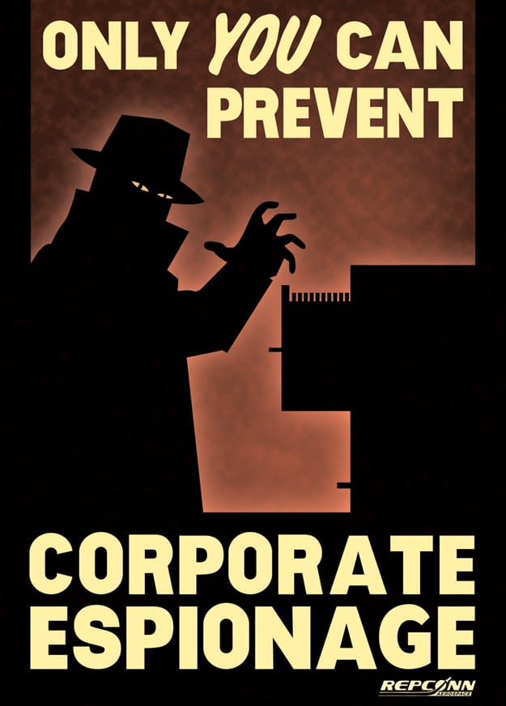
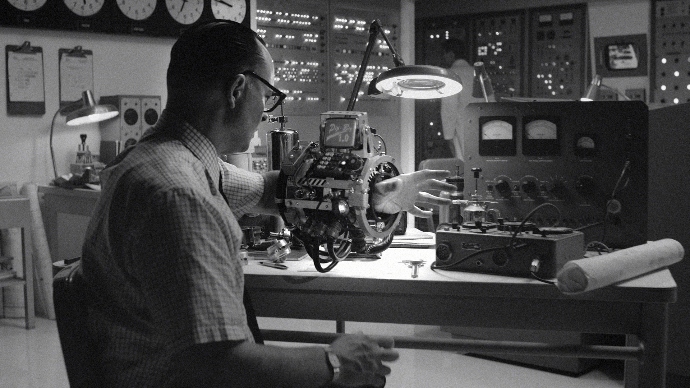
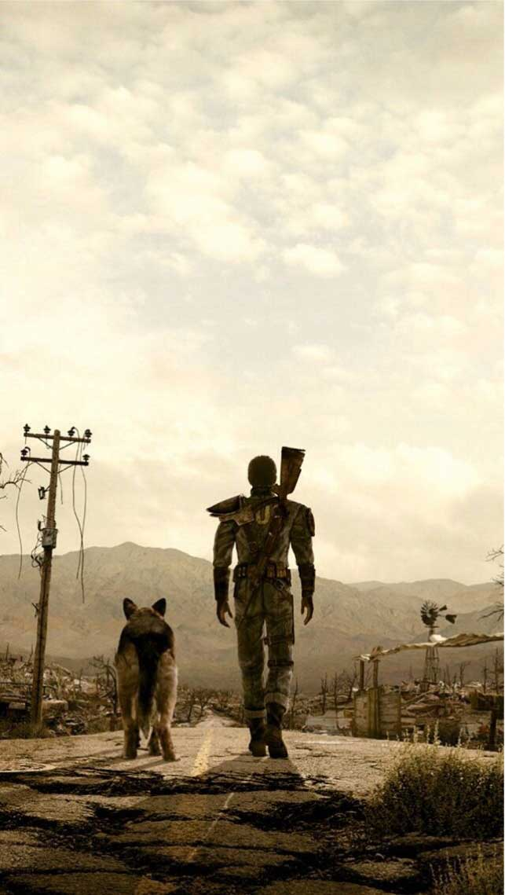
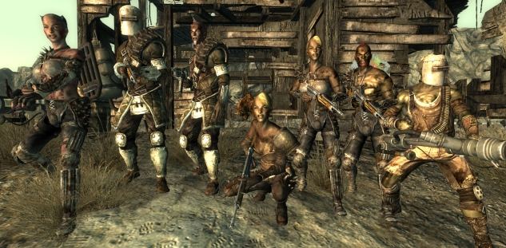
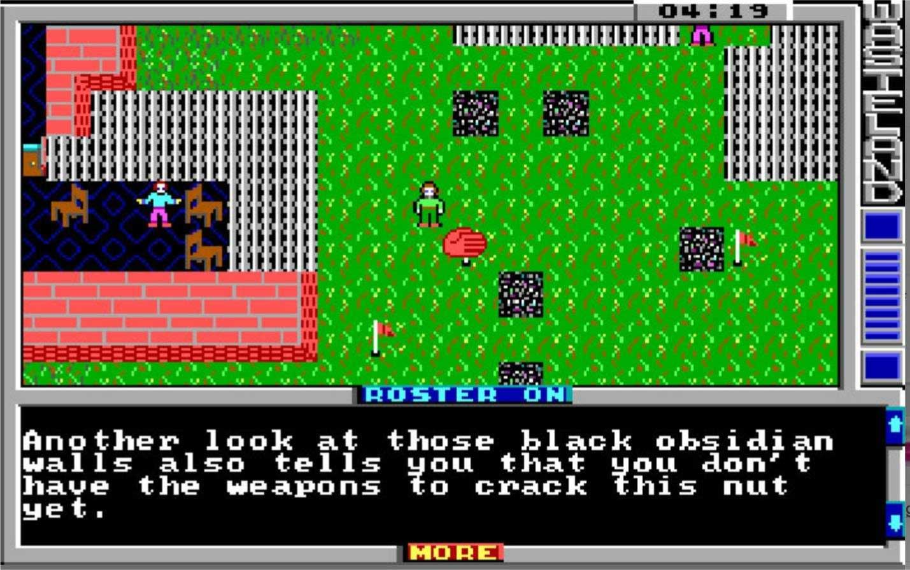
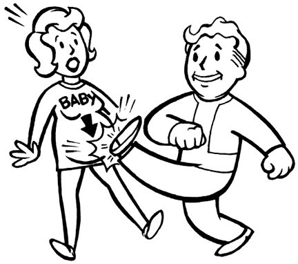
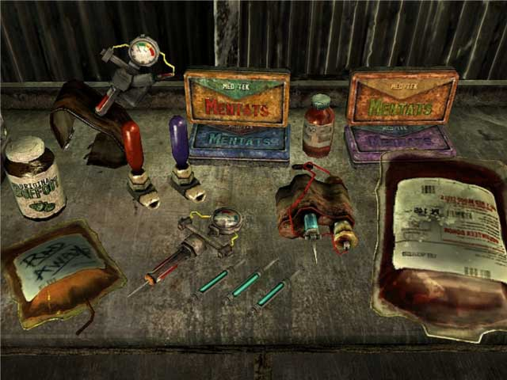
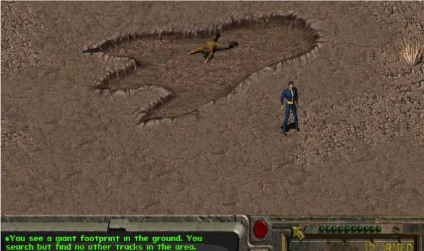
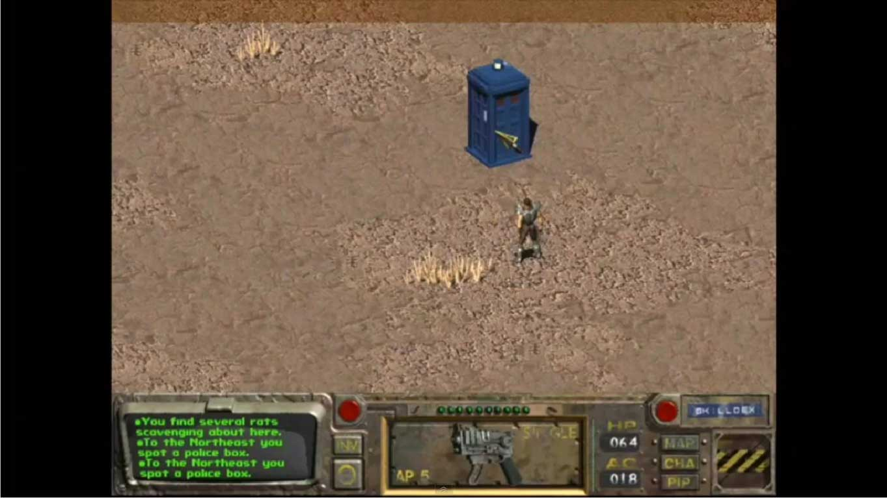

Did you know, the fallout series takes place during the aftermath of a nuclear war between China and the United States during the 22nd and 23rd centuries. However dispite taking place almost three centuries ahead of our timeline, the design, setting, and art all take inspiriation from 1950’s post war America. The hopeful ideals of a better future and the hope that technology will solve all problems. The only downside being the threat of nuclear annihilation and espionage from the dreaded communists. Our timeline and the Fallout series’ timeline were one in the same until an event known as the Divergence. The Divergence is a point in time where our timeline and Fallout’s breaks off. So the miniaturization of computers and other electronics weren’t as prodominant. As a result computers still used reel-to-reel tape, took up large amounts of room, and instead of transistors, large vacuum tubes were used to process electrical signals.
 Another bit of inspiration for the apocalyptic portion of the Fallout series is Mad Max. This can be seen in the leather armor and the partnership between the main protaginast and their dog. In addition one of the factions that you encounter, the raiders take their design concepts from Mad Max as well.
 During the creation of the Fallout series was heavily based on a similar post-apocalyptic game called Wasteland that in some ways is its successor. After the release, the developer Interplay Entertainment started to work on a game called Meantime. However this game was canceled because it was set to release during a time where video games with 16 color vga graphics were being outshined by competators who used 256 vga graphics.
Electronic Arts, who owned the rights to Wasteland attempted to make a sequal to Wasteland without Interplay’s involvement. They created a game called Fountain of Dreams. However, due to the scope and the difficulty of the game, it was met with poor reception from fans and critics. Interplay went in their own direction. Salvaging what they could and after nine years of work, Fallout was released. The designers at Interplay tried to secure the rights for the use of Steve Jackson’s GURPS system, also known as the General Universal Role-Playing System. And for a while, the game was actually called GURPS Wasteland. However due to the extreme violence that would be portrayed in the game, Steve Jackson would not allow them the rights to use the system. Because of this, Black Isle Studios developed the SPECIAL system, with each letter of the acronym corresponding to the traits Strength, Perception, Endurance, Charisma, Intelligance, Agility, and Luck.
Unfortunately Fallout’s high amount of violence and mature subject matters weren’t always well recieved especially outside the United States. Controversial subjects like drug abuse and the killing of childeren were only some of the issues tackled by the Fallout series. Originally the first and second Fallout games had child non-playable characters wandering throughout the map. However, in the German and the U.K. versions of the game completely removed children in order to avoid any controversy. However, this meant that the child killer perk as well as the encounter with the bounty hunter, Chris Avallone who has a deep hatred for child killers, would be completely inacessable.
The original image surfaced on the original artist, Brian Menze put it on his portfolio. “This image was unused and the only Vault Boy image to ever be cut from Fallout 2. (I'm sure you can figure out why) I remember when I got the request to do a perk illustration for "Child Killer" that there would be no way to keep in from being offensive. I mean really! How do you make an illustration of "child killer" and keep it from being offensive? Anyway for some reason, I thought this was the least offensive way to do it. I have no idea what I was thinking. Even the designer who requested it realized it was a bad idea, so we fixed it. Looking back on it now, I can't believe I drew this.”
Drug referances and paraphernalia were also censored in various parts of the world. In the German and the UK release of Fallout changed phrases and wording to avoid drug referances all together. Such as the word drug being changed to chem and the word addiction being changed to craving. Because of this, the term chem actually became the standard for all releases of the game. In the recent 3d Fallout games, Med-X a chem that increases defense for a short duration, was originally called morphine. However the Australian Classification Board made it illegal to sell Fallout 3 in Australia due to the original referance to morphine. Because of this, the developers changed the game in order to remove all drug referances. However the original code still shows Med-X being listed as Morphine.
There are many easter eggs and referances in the Fallout series over the years. A couple of the most notable in the first games are the referances to Godzilla and Dr. Who. Yhe player can find the referance to Godzilla by wandering the map and finding a giant reptillian footprint. However the referance to Dr. Who is a little more difficult to find. The Tartus can be encountered randomly while wandering the wasteland. However if the player tries to approach it, the Tartus disappears.
 